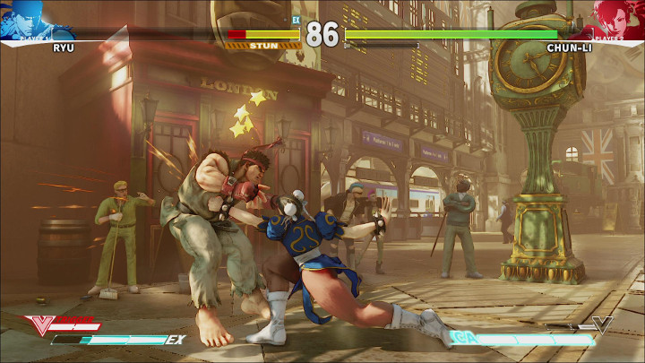

Quăng tạm vô đây để thử layout, dịch sau nhá.
Nguồn: http://www.sirlin.net/ptw-book/introducingthe-scrub
So far you have learned only obvious and mundane things. I know that taking the first step can be the hardest part of the journey, so I wanted to coddle you a little just to get you going. The coddling stops here. You must now understand the cold, hard truth of competition. This is the difficult part to accept. This is the part that will upset you. You will have many defense mechanisms that will tell you that I am wrong, but I assure you with certainty that on this point I am delivering divine truth directly to you. Introducing...the Scrub
The derogatory term “scrub” means several different things. One definition is someone (especially a game player) who is not good at something (especially a game). By this definition, we all start out as scrubs, and there is certainly no shame in that. I mean the term differently, though. A scrub is a player who is handicapped by self-imposed rules that the game knows nothing about. A scrub does not play to win.
Buh-but muh 8 frames...
The derogatory term “scrub” means several different things. One definition is someone (especially a game player) who is not good at something (especially a game). By this definition, we all start out as scrubs, and there is certainly no shame in that. I mean the term differently, though. A scrub is a player who is handicapped by self-imposed rules that the game knows nothing about. A scrub does not play to win.

Now, everyone begins as a poor player—it takes time to learn a game to get to a point where you know what you’re doing. There is the mistaken notion, though, that by merely continuing to play or “learn” the game, one can become a top player. In reality, the “scrub” has many more mental obstacles to overcome than anything actually going on during the game. The scrub has lost the game even before it starts. He’s lost the game even before deciding which game to play. His problem? He does not play to win.
The scrub would take great issue with this statement for he usually believes that he is playing to win, but he is bound up by an intricate construct of fictitious rules that prevents him from ever truly competing. These made-up rules vary from game to game, of course, but their character remains constant. Let’s take a fighting game off of which I’ve made my gaming career: Street Fighter.
In Street Fighter, the scrub labels a wide variety of tactics and situations “cheap.” This “cheapness” is truly the mantra of the scrub. Performing a throw on someone is often called cheap. A throw is a special kind of move that grabs an opponent and damages him, even when the opponent is defending against all other kinds of attacks. The entire purpose of the throw is to be able to damage an opponent who sits and blocks and doesn’t attack. As far as the game is concerned, throwing is an integral part of the design—it’s meant to be there—yet the scrub has constructed his own set of principles in his mind that state he should be totally impervious to all attacks while blocking. The scrub thinks of blocking as a kind of magic shield that will protect him indefinitely. Why? Exploring the reasoning is futile since the notion is ridiculous from the start.
[...]